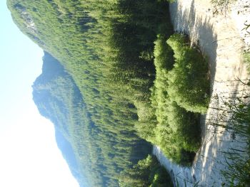
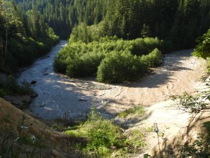
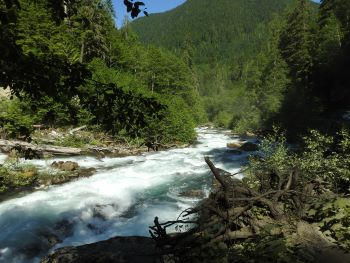

Mountain Loop Highway, WA
这几天西雅图超级热，每天都在100F (40C)以上, 因为这是西雅图，百年不遇的情况，上上下下都严阵以待。过去一百年内，只有三天超过100F (40C)，这三天是在不同的年。这次一下子就是三天，还是连在一起的，所有的人都没有准备，😳😳
我们这个周未没有什么安排，昨天在家里闷头做了好多家务，今天一看这么热的天，我们两个懒虫就决定出去玩了😜😜。
我们去了山里，山里很凉快，最低气温到了78F (25C)!!!😊😊 好凉快的。
我们的路线是Mountain Loop Highway in Mt Baker-Snoqualmie National Forest.
我们在路上看见了泥河（右下图1、2 ），这么多泥的河在这里不多见， 黄河！？😜 左下图是常见的河水。
  
×